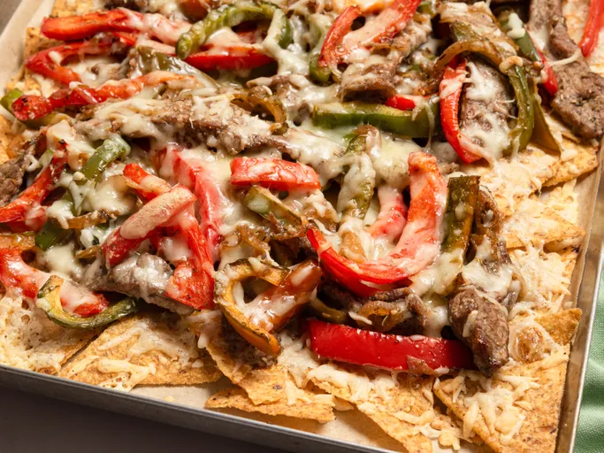

Home
Philly Cheesesteak Nachos!

Description
These Philly cheesesteak nachos are like a crunchy version of Philly's favorite sandwich. Tortilla chips, layered with seared steak, onion, and pepper strips, and topped with 2 kinds of cheese, might be the best nacho variation ever invented.
Ingredients
- 1 1/2 pounds ribeye steak
- 1 teaspoon garlic powder
- 2 tablespoon steak seasoning, divided
- 2 tablespoons olive oil, divided, or as needed
- 1 onion, thinly sliced
- 1 red bell pepper, sliced into semi-thin strips
- 1 green bell pepper, sliced into semi-thin strips
- 1 bag plain tortilla chips
- 12 ounces shredded Swiss cheese
- 12 ounces shredded provolone cheese
Steps
- Gather all ingredients. Place steak in the freezer until very cold, 30 to 40 minutes, to make slicing easier.
- Preheat the oven to 400 degrees F (200 degrees C). Line a baking sheet with parchment paper.
- Slice steak into thin strips; season with garlic powder and 1 tablespoon steak seasoning.
- Heat 1 tablespoon olive oil in a cast iron skillet and carefully place strips in the skillet in a single layer; do not overcrowd. Cook for 2 to 3 minutes on each side.You may need to cook steak in batches. Remove steak from skillet, set aside.
- Heat remaining olive oil in the same skillet and add onions, red bell pepper, and green bell pepper. Once the mixture begins to cook, add remaining tablespoon steak seasoning. Stir well and cook for 5 minutes, stirring occasionally.
- Turn heat off and add steak back into the skillet with onion-pepper mixture and toss together.
- Spread tortilla chips evenly on the prepared baking sheet. Sprinkle 1/2 cup Swiss cheese and 1/2 cup provolone cheese over tortilla chips.
- Layer about half of steak mixture over cheese. Add another layer of Swiss and provolone cheese, followed by remaining steak mixture. Sprinkle with remaining cheese.
- Bake nachos in the preheated oven until cheese is melted, 10 to 15 minutes.